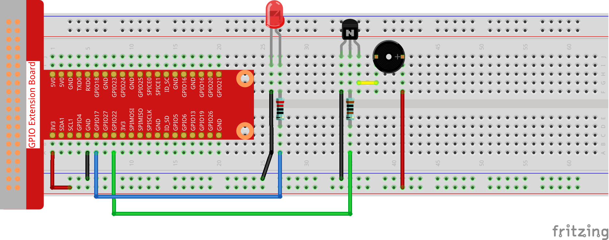

Note
Bonjour et bienvenue dans la communauté SunFounder Raspberry Pi & Arduino & ESP32 Enthusiasts sur Facebook ! Plongez au cœur de Raspberry Pi, Arduino et ESP32 avec d’autres passionnés.
Pourquoi nous rejoindre ?
Support Expert : Résolvez les problèmes après-vente et les défis techniques avec l’aide de notre communauté et de notre équipe.
Apprendre & Partager : Échangez des astuces et des tutoriels pour améliorer vos compétences.
Aperçus Exclusifs : Accédez en avant-première aux annonces de nouveaux produits et aux aperçus.
Réductions Spéciales : Profitez de réductions exclusives sur nos nouveaux produits.
Promotions et Concours Festifs : Participez à des concours et promotions pendant les fêtes.
👉 Prêt à explorer et créer avec nous ? Cliquez sur [Ici] et rejoignez-nous dès aujourd’hui !
3.1.11 Générateur de Code Morse
Introduction
Dans ce cours, nous allons créer un générateur de code Morse, où vous tapez une série de lettres anglaises sur le Raspberry Pi pour qu’elles apparaissent sous forme de code Morse.
Composants

Schéma de Circuit
T-Board Name |
physical |
wiringPi |
BCM |
GPIO17 |
Pin 11 |
0 |
17 |
GPIO22 |
Pin 15 |
3 |
22 |

Procédures Expérimentales
Étape 1 : Construisez le circuit. (Faites attention aux pôles du buzzer : celui avec l’étiquette + est le pôle positif et l’autre est le pôle négatif.)
{kind=link}
Pour les utilisateurs de langage C
Étape 2 : Ouvrez le fichier de code.
cd ~/davinci-kit-for-raspberry-pi/c/3.1.11/
Étape 3 : Compilez le code.
gcc 3.1.11_MorseCodeGenerator.c -lwiringPi
Étape 4 : Exécutez le fichier exécutable ci-dessus.
sudo ./a.out
Après le démarrage du programme, tapez une série de caractères, et le buzzer ainsi que la LED enverront les signaux correspondants en code Morse.
Note
Si cela ne fonctionne pas après l’exécution ou s’il y a un message d’erreur : "wiringPi.h: No such file or directory", veuillez vous référer à C code is not working?.
Explication du Code
struct MORSE{
char word;
unsigned char *code;
};
struct MORSE morseDict[]=
{
{'A',"01"}, {'B',"1000"}, {'C',"1010"}, {'D',"100"}, {'E',"0"},
{'F',"0010"}, {'G',"110"}, {'H',"0000"}, {'I',"00"}, {'J',"0111"},
{'K',"101"}, {'L',"0100"}, {'M',"11"}, {'N',"10"}, {'O',"111"},
{'P',"0110"}, {'Q',"1101"}, {'R',"010"}, {'S',"000"}, {'T',"1"},
{'U',"001"}, {'V',"0001"}, {'W',"011"}, {'X',"1001"}, {'Y',"1011"},
{'Z',"1100"},{'1',"01111"}, {'2',"00111"}, {'3',"00011"}, {'4',"00001"},
{'5',"00000"},{'6',"10000"}, {'7',"11000"}, {'8',"11100"}, {'9',"11110"},
{'0',"11111"},{'?',"001100"}, {'/',"10010"}, {',',"110011"}, {'.',"010101"},
{';',"101010"},{'!',"101011"}, {'@',"011010"}, {':',"111000"}
};
Cette structure MORSE est le dictionnaire du code Morse, contenant les caractères A-Z, les chiffres 0-9 et les symboles "?" "/" ":" "," "." ";" "!" "@" .
char *lookup(char key,struct MORSE *dict,int length)
{
for (int i=0;i<length;i++)
{
if(dict[i].word==key){
return dict[i].code;
}
}
}
La fonction lookup() permet de "consulter le dictionnaire". Définissez une clé, recherchez les mots similaires à clé dans la structure morseDict et renvoyez l’information correspondante— le "code" du mot en question.
void on(){
digitalWrite(ALedPin,HIGH);
digitalWrite(BeepPin,HIGH);
}
Créez une fonction on() pour activer le buzzer et la LED.
void off(){
digitalWrite(ALedPin,LOW);
digitalWrite(BeepPin,LOW);
}
La fonction off() désactive le buzzer et la LED.
void beep(int dt){
on();
delay(dt);
off();
delay(dt);
}
Définissez une fonction beep() pour faire émettre des sons au buzzer et faire clignoter la LED à un intervalle de dt. .. code-block:: c
void morsecode(char *code){ int pause = 250; char *point = NULL; int length = sizeof(morseDict)/sizeof(morseDict[0]); for (int i=0;i<strlen(code);i++) { point=lookup(code[i],morseDict,length); for (int j=0;j<strlen(point);j++){ if (point[j]==”0”) { beep(pause/2); }else if(point[j]==”1”) { beep(pause); } delay(pause); } } }
La fonction morsecode() est utilisée pour traiter le code Morse des caractères saisis en faisant en sorte que le « 1 » du code émette des sons ou des lumières prolongés, tandis que le « 0 » émette des sons ou des lumières courts, par exemple, si vous entrez « SOS », un signal avec trois segments courts, trois segments longs puis trois segments courts sera émis « · · · - - - · · · « .
int toupper(int c)
{
if ((c >= 'a') && (c <= 'z'))
return c + ('A' - 'a');
return c;
}
char *strupr(char *str)
{
char *orign=str;
for (; *str!='\0'; str++)
*str = toupper(*str);
return orign;
}
Avant de coder, vous devez unifier les lettres en majuscules.
void main(){
setup();
char *code;
int length=8;
code = (char*)malloc(sizeof(char)*length);
while (1){
printf("Please input the messenger:");
delay(100);
scanf("%s",code);
code=strupr(code);
printf("%s\n",code);
delay(100);
morsecode(code);
}
}
Lorsque vous tapez les caractères avec le clavier, code=strupr(code) convertit les lettres saisies en majuscules.
Printf() affiche ensuite le texte clair à l’écran de l’ordinateur, et la fonction morsecode() fait en sorte que le buzzer et la LED émettent le code Morse.
Notez que la longueur des caractères saisis ne doit pas dépasser la longueur (modifiable).
Pour les utilisateurs de langage Python
Étape 2 : Ouvrez le fichier de code.
cd ~/davinci-kit-for-raspberry-pi/python
Étape 3 : Exécutez.
sudo python3 3.1.11_MorseCodeGenerator.py
Après le démarrage du programme, tapez une série de caractères, et le buzzer ainsi que la LED enverront les signaux correspondants en code Morse.
Code
Note
Vous pouvez Modifier/Réinitialiser/Copier/Exécuter/Arrêter le code ci-dessous. Mais avant cela, vous devez vous rendre au chemin source du code comme davinci-kit-for-raspberry-pi/python.
import RPi.GPIO as GPIO
import time
BeepPin=22
ALedPin=17
MORSECODE = {
'A':'01', 'B':'1000', 'C':'1010', 'D':'100', 'E':'0', 'F':'0010', 'G':'110',
'H':'0000', 'I':'00', 'J':'0111', 'K':'101', 'L':'0100', 'M':'11', 'N':'10',
'O':'111', 'P':'0110', 'Q':'1101', 'R':'010', 'S':'000', 'T':'1',
'U':'001', 'V':'0001', 'W':'011', 'X':'1001', 'Y':'1011', 'Z':'1100',
'1':'01111', '2':'00111', '3':'00011', '4':'00001', '5':'00000',
'6':'10000', '7':'11000', '8':'11100', '9':'11110', '0':'11111',
'?':'001100', '/':'10010', ',':'110011', '.':'010101', ';':'101010',
'!':'101011', '@':'011010', ':':'111000',
}
def setup():
GPIO.setmode(GPIO.BCM)
GPIO.setup(BeepPin, GPIO.OUT, initial=GPIO.LOW)
GPIO.setup(ALedPin,GPIO.OUT,initial=GPIO.LOW)
def on():
GPIO.output(BeepPin, 1)
GPIO.output(ALedPin, 1)
def off():
GPIO.output(BeepPin, 0)
GPIO.output(ALedPin, 0)
def beep(dt): # dt pour le temps de pause.
on()
time.sleep(dt)
off()
time.sleep(dt)
def morsecode(code):
pause = 0.25
for letter in code:
for tap in MORSECODE[letter]:
if tap == '0':
beep(pause/2)
if tap == '1':
beep(pause)
time.sleep(pause)
def main():
while True:
code=input("Please input the messenger:")
code = code.upper()
print(code)
morsecode(code)
def destroy():
print("")
GPIO.output(BeepPin, GPIO.LOW)
GPIO.output(ALedPin, GPIO.LOW)
GPIO.cleanup()
if __name__ == '__main__':
setup()
try:
main()
except KeyboardInterrupt:
destroy()
Explication du Code
MORSECODE = {
'A':'01', 'B':'1000', 'C':'1010', 'D':'100', 'E':'0', 'F':'0010', 'G':'110',
'H':'0000', 'I':'00', 'J':'0111', 'K':'101', 'L':'0100', 'M':'11', 'N':'10',
'O':'111', 'P':'0110', 'Q':'1101', 'R':'010', 'S':'000', 'T':'1',
'U':'001', 'V':'0001', 'W':'011', 'X':'1001', 'Y':'1011', 'Z':'1100',
'1':'01111', '2':'00111', '3':'00011', '4':'00001', '5':'00000',
'6':'10000', '7':'11000', '8':'11100', '9':'11110', '0':'11111',
'?':'001100', '/':'10010', ',':'110011', '.':'010101', ';':'101010',
'!':'101011', '@':'011010', ':':'111000',
}
Cette structure MORSECODE est le dictionnaire du code Morse, contenant les lettres A-Z, les chiffres 0-9 et les signes "?" "/" ":" "," "." ";" "!" "@" .
def on():
GPIO.output(BeepPin, 1)
GPIO.output(ALedPin, 1)
La fonction on() active le buzzer et la LED.
def off():
GPIO.output(BeepPin, 0)
GPIO.output(ALedPin, 0)
La fonction off() permet d’éteindre le buzzer et la LED.
def beep(dt): # x pour la durée de pause.
on()
time.sleep(dt)
off()
time.sleep(dt)
La fonction beep() permet de faire émettre des sons au buzzer et faire clignoter la LED avec un intervalle de dt.
def morsecode(code):
pause = 0.25
for letter in code:
for tap in MORSECODE[letter]:
if tap == '0':
beep(pause/2)
if tap == '1':
beep(pause)
time.sleep(pause)
La fonction morsecode() est utilisée pour traiter le code Morse des caractères saisis en faisant en sorte que le « 1 » du code émette des sons ou des lumières prolongés, tandis que le « 0 » émette des sons ou des lumières courts, par exemple, si vous entrez « SOS », un signal avec trois segments courts, trois segments longs puis trois segments courts sera émis « · · · - - - · · · « .
def main():
while True:
code=input("Please input the messenger:")
code = code.upper()
print(code)
morsecode(code)
Lorsque vous tapez les caractères avec le clavier, upper() convertit les lettres saisies en majuscules.
Printf() affiche ensuite le texte clair à l’écran de l’ordinateur, et la fonction morsecode() fait en sorte que le buzzer et la LED émettent le code Morse.
Image Illustrative